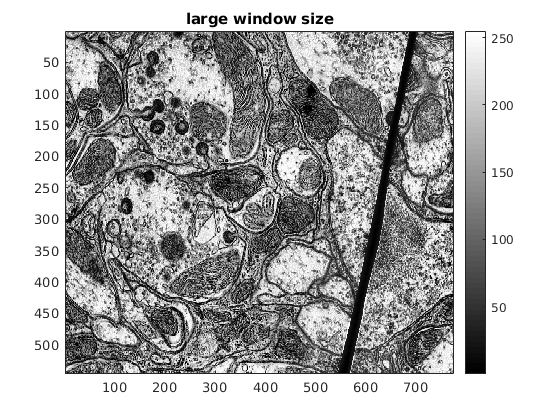

Contents
Assignment-I Report for CS663 - Fundamentals of Digital Image Processing
This script performs various gray-level transformations on some input images and automatically publishes the results in a formatted HTML document.
inputImages = ["barbara.png","TEM.png","canyon.png","retina.png","church.png","retinaMask.png","retinaRef.png"]; ii1 = im2double(imread(strcat('../data/',char(inputImages(1))))); ii2 = im2double(imread(strcat('../data/',char(inputImages(2))))); ii3 = im2double(imread(strcat('../data/',char(inputImages(3))))); ii4 = im2double(imread(strcat('../data/',char(inputImages(4))))); ii5 = im2double(imread(strcat('../data/',char(inputImages(5))))); ii6 = im2double(imread(strcat('../data/',char(inputImages(6))))); ii7 = im2double(imread(strcat('../data/',char(inputImages(7))))); ii6(ii6==0) = nan; maskedi4 = cat(3,ii4(:,:,1) .* ii6,ii4(:,:,2) .* ii6,ii4(:,:,3) .* ii6); maskedi5 = cat(3,ii7(:,:,1) .* ii6,ii7(:,:,2) .* ii6,ii7(:,:,3) .* ii6);
Problem 2 Part (a)
Linear contrast stretching using the script myLinearContrastStretching.m Transformation function used for applying linear contrast stretching is:

where is the minimum pixel intensity in the image and is the highest pixel intensity in the image.
This formula works by bringing the pixel intensities to a range of 0 to 1 and then scales them to 0 - 255 by multiplying by 255.
The contrast-stretched images and original images are shown below.
barbara.png
figure; im = myLinearContrastStretching(ii1); imagesc(im/255); title('contrast-stretched'); colormap gray; colorbar;
imagesc(ii1); title('original'); colormap gray; colorbar;
TEM.png
im = myLinearContrastStretching(ii2); imagesc(im/255); title('contrast-stretched'); colormap gray; colorbar;
imagesc(ii2); title('original'); colormap gray; colorbar;
canyon.png
im = myLinearContrastStretching(ii3);
title('contrast-stretched');
imshow(im/255);
imshow(ii3);
title('original');
church.png
im = myLinearContrastStretching(ii5);
imshow(im/255);
title('contrast-stretched');
imshow(ii5);
title('original');
On applying contrast stretching on the image we do not observe any noticeable change in the image. Contrast stretching did not work on this image as the the pixel intensities were already in the range 0-255. So no significant change will be there in the final pixel intensities.
Problem 2 Part (b)
Histogram equalization using the script myHE.m
barbara.png
im = myHE(ii1); imagesc(im/255); title('histogram equalised'); colormap gray; colorbar;
imagesc(ii1); title('original'); colormap gray; colorbar;
TEM.png
im = myHE(ii2); imagesc(im/255); title('histogram equalised'); colormap gray; colorbar;
imagesc(ii2); title('original'); colormap gray; colorbar;
canyon.png
im = myHE(ii3);
title('histogram equalised');
imshow(im/255);
imshow(ii3);
title('original');
church.png
im = myHE(ii5);
imshow(im/255);
title('histogram equalised');
imshow(ii5);
title('original');
On applying Histogram Equalization on the ‘church.png’ image, the following was observed.
The histogram equalized image is more favourable due to the vivid display of colours in the image. As we can see, the original image has a lot of intensities are around zero (dark intensities). i.e. there is an unequal distribution of the intensities towards 0. Histogram equalization solves this by roughly centering the histogram of the intensities. Therefore on applying histogram equalization, the contrast between the various colours can be seen more clearly as the intensities are spread more evenly than before.
Problem 2 Part (c)
Histogram matching using the script myHM.m
We can see that on matching the histogram of the input image to that of the reference image, we get an image that is more vivid. This is because just as in the reference image the new histogram matched image has a more even distribution of intensities.
imshow(maskedi4);
title('original');

im = myHM(maskedi4,maskedi5);
imshow(im);
title('histogram matched');
im = myHE(maskedi4);
imshow(im .* ii6/255);
title('histogram equalised');
Problem 2 Part (d)
Adaptive histogram equalization using the script myAHE.m Window sizes are optimized for individual images.
barbara.png
imagesc(ii1); colormap gray; colorbar; title('original');
im = myAHE(ii1,210); imagesc(im); colormap gray; title('tuned window size'); colorbar;
im = myAHE(ii1,300); imagesc(im); colormap gray; title('large window size'); colorbar;
im = myAHE(ii1,40); imagesc(im); colormap gray; title('small window size'); colorbar;
TEM.png
imagesc(ii2); colormap gray; colorbar; title('original');
im = myAHE(ii2,90); imagesc(im); title('tuned window size'); colormap gray; colorbar;
im = myAHE(ii2,200); imagesc(im); title('large window size'); colormap gray; colorbar;
im = myAHE(ii2,40); imagesc(im); title('small window size'); colormap gray; colorbar;
canyon.png
imshow(ii3);
title('original');
im = myAHE(ii3,300);
imshow(im);
title('tuned window size');
im = myAHE(ii3,500);
imshow(im);
title('large window size');
im = myAHE(ii3,40);
imshow(im);
title('small window size');
Problem 2 Part (e)
Contrast-Limited Adaptive histogram equalization using the script myCLAHE.m Window sizes and threshold are optimized for individual images.
barbara.png
imagesc(ii1); title('original'); colormap gray; colorbar;
im = myCLAHE(ii1,100,0.1); imagesc(im); colormap gray; title('tuned parameters'); colorbar;
im = myCLAHE(ii1,100,0.05); imagesc(im); title('halved threshold'); colormap gray; colorbar;
TEM.png
imagesc(ii2); title('original'); colormap gray; colorbar;
im = myCLAHE(ii2,50,0.6); imagesc(im); title('tuned parameters'); colormap gray; colorbar;
im = myCLAHE(ii2,50,0.3); imagesc(im); title('halved threshold'); colormap gray; colorbar;

canyon.png
imshow(ii3);
title('original');
im = myCLAHE(ii3,150,0.2);
imshow(im);
title('tuned parameters');

im = myCLAHE(ii3,150,0.1);
imshow(im);
title('halved threshold');